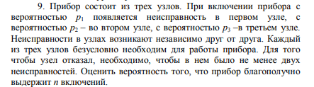
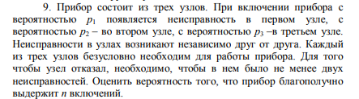

Лабораторная работа №6
Моделирование методом Монте-Карло
Составить программу решения задачи, определенной в
соответствии с вариантом задания, с помощью машинного
моделирования (метод Монте-Карло).
1)Построить доверительный интервал для полученных оценок, накрывающий точное значение оцениваемых вероятностей с надежностью β=0,95.
2) Правильность результатов проверить аналитическим решением задачи. Теоретическая часть для данной лабораторной работы представлена в учебнике [1] на стр. 94–108 и 110–117

1)Построить доверительный интервал для полученных оценок, накрывающий точное значение оцениваемых вероятностей с надежностью β=0,95.
2) Правильность результатов проверить аналитическим решением задачи. Теоретическая часть для данной лабораторной работы представлена в учебнике [1] на стр. 94–108 и 110–117

Доверительный интервал
[
:
]